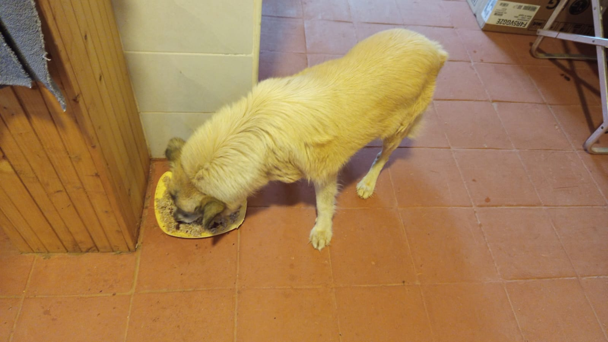

Mucheru World of Golf
Field engineering operations across Mucheru World of Golf on Saturday, 24th October 2026 achieved significant advances in irrigation automation, putting green rootzone spreading, teebox earthworks, drainage gradient re-engineering, and reservoir water transfer:
Civil Earthworks & Hydraulic Engineering Milestones
Under the joint supervision of Mr. Gichuhi and Ken, with Carol, Joe Kamau, and Peter Githinji on site, site operations advanced along multiple critical paths. A plumbing technician set up electric solenoid control valves across eight greens (Greens 2, 8, 9, 12, 13, 16, 17, and 18) following the delivery of fresh HDPE pipe coils and solenoids. Labor crews backfilled lateral HDPE pop-up sprinkler pipe trenches. Clean river sand was applied across the foundation of Green 12 with initial manual leveling underway. Rich red topsoil was spread across Teebox 14. Drainage performance at Green 6 was audited, with Joe Kamau and Peter Githinji taking exact slope measurements for an upcoming replacement trench. Workers shaped and leveled the main collector drainage trench, tested PVC pipe gravity flow with buckets, applied foliar fertilizer to perimeter hedge seedlings, watered palm trees and Green 5 turf, and continued pumping water from Dam 1 to Dam 2.
- Irrigation Solenoid Valves Installed (8 Greens): The site plumber installed electric solenoid control valves connected via saddle clamps and threaded fittings across Greens 2, 8, 9, 12, 13, 16, 17, and 18, enabling automated zone-by-zone irrigation control.
- Material Deliveries (HDPE Pipes & Solenoid Valves): A tractor trailer delivered large coils of black HDPE pipe, and a shipment of boxed electric solenoid valves arrived on site for immediate lateral network installation.
- HDPE Pop-Up Sprinkler Lateral Trench Backfilling: Manual labor crews backfilled and compacted soil over the installed HDPE sprinkler pipes along the green surrounds and collars, protecting lines from weather and construction traffic.
- Riversand Application & Initial Leveling on Green 12: Clean river sand hauled to Green 12 was distributed in heaps across the lined foundation and manually spread and leveled with shovels by groundsmen to form the agronomic rootzone bed.
- Teebox 14 Red Soil Application & Surface Spreading: Ground labor teams hauled wheelbarrows of rich red topsoil onto the Teebox 14 launch platform mound, spreading and grading the soil under the direct supervision and consultation of Joe Kamau and Carol.
- Green 6 Drainage System Engineering Audit: Drainage flow issues were identified along the existing PVC line at Green 6; Joe Kamau and Peter Githinji conducted on-site level surveys using measuring tapes and water tubes to establish grade for a replacement drainage trench.
- Main Collector Trench Leveling & Bucket Gravity Testing: Manual crews trimmed and leveled the base of the long main collector drainage channel; workers tested PVC pipe runs by pouring water from buckets into inlets to confirm positive gravity discharge.
- Reservoir Water Transfer & Course Vegetation Hydration: Fuel-powered pumping continued transferring water from Dam 1 into Dam 2; the automated ring irrigation system was turned on for boundary palm trees, Green 5 turf was watered, and perimeter hedge seedlings received foliar fertilizer spraying.
18-hole putting green status audit showing the latest work completed and current condition for each green as of October 24, 2026:
| Green | Current Technical & Agronomic State | Milestone Status |
|---|---|---|
| Green 1 | HDPE irrigation pipes laid and fitted inside perimeter sprinkler trenches (Oct 18). | Sprinkler Pipes Laid |
| Green 2 Today | Electric solenoid valve installed on lateral line; HDPE sprinkler trenches backfilled (Oct 24). | Solenoid Installed |
| Green 3 | Saddle clamps installed on HDPE pop-up sprinkler pipes and perimeter trenches backfilled (Oct 23). | Saddle Clamps & Covered |
| Green 4 | Saddle clamps installed on HDPE pop-up sprinkler pipes and perimeter trenches backfilled (Oct 23). | Saddle Clamps & Covered |
| Green 5 Today | Established mature championship putting green turfgrass watered with pop-up sprinklers (Oct 24). | Turf Irrigated |
| Green 6 Today | Drainage flow issues identified; slope measurements taken for upcoming replacement trench (Oct 24). | New Trench Measured |
| Green 7 | Drainage outlet trench connecting green 7 to main canal dug and leveled by manual crew (Oct 15). | Outlet Trench Dug • Leveled |
| Green 8 Today | Electric solenoid valve installed on lateral line; HDPE sprinkler trenches backfilled (Oct 24). | Solenoid Installed |
| Green 9 Today | Electric solenoid valve installed on lateral line; HDPE sprinkler trenches backfilled (Oct 24). | Solenoid Installed |
| Green 10 | Pop-up sprinkler trenches digging completed around collar and surrounds (Oct 15). | Sprinkler Trenches Complete |
| Green 11 | Saddle clamps installed on HDPE pop-up sprinkler pipes and perimeter trenches backfilled (Oct 22). | Saddle Clamps & Covered |
| Green 12 Today | River sand applied across foundation with initial leveling underway; solenoid valve set up (Oct 24). | Riversand • Solenoid Set |
| Green 13 Today | Electric solenoid valve installed on lateral line; HDPE sprinkler trenches backfilled (Oct 24). | Solenoid Installed |
| Green 14 | Saddle clamps installed on HDPE pop-up sprinkler pipes and perimeter trenches backfilled (Oct 23). | Saddle Clamps & Covered |
| Green 15 | Saddle clamps installed on HDPE pop-up sprinkler pipes and perimeter trenches backfilled (Oct 22). | Saddle Clamps & Covered |
| Green 16 Today | Electric solenoid valve installed on lateral line; HDPE sprinkler trenches backfilled (Oct 24). | Solenoid Installed |
| Green 17 Today | Electric solenoid valve installed on lateral line; HDPE sprinkler trenches backfilled (Oct 24). | Solenoid Installed |
| Green 18 Today | Electric solenoid valve installed on lateral line; HDPE sprinkler trenches backfilled (Oct 24). | Solenoid Installed |
18-hole championship teebox status audit tracking launch platform shaping, red soil leveling, and irrigation pipe installations as of October 24, 2026:
| Teebox | Current Technical & Earthwork State | Platform Status |
|---|---|---|
| Tee 1 | Red soil applied, spread, and leveled across launch platform to finished grade (Oct 23). | Red Soil Leveled |
| Tee 2 | Platform surface grading and earthwork leveling further refined per updated instructions (Oct 20). | Refined & Graded |
| Tee 3 | Playing launch platform contoured, leveled, and refined per new instructions given today (Oct 20). | Refined & Graded |
| Tee 4 | Championship launch platform surface graded, contoured, and refined per new instructions (Oct 20). | Refined & Graded |
| Tee 5 | Playing platform surface actively graded and refined with red soil per new instructions (Oct 20). | Grading & Refining |
| Tee 6 | Trench excavated through platform to lay HDPE irrigation pipe connecting to Green 7 system (Oct 21). | Irrigation Trench Dug |
| Tee 7 | Both platforms actively graded, contoured, and refined with red soil per new instructions (Oct 20). | Refined & Graded |
| Tee 8 | Championship launch platform surface grading and contour refinement actively continued (Oct 19). | Grading & Refining |
| Tee 9 | Playing launch platform grading and contour refinement continued per new instructions (Oct 20). | Refinement in Progress |
| Tee 10 | Red soil applied, spread, and leveled across launch platform surface (Oct 23). | Red Soil Leveled |
| Tee 11 | Red soil applied, spread, and leveled across playing launch platform to finished grade (Oct 22). | Red Soil Leveled |
| Tee 12 | Red soil applied across both men's and women's tee platforms; final leveling in progress (Oct 22). | Red Soil Applied |
| Tee 13 | Initial layer of red soil hauled, applied, and spread across platform surface (Oct 21). | Red Soil Applied |
| Tee 14 Today | Initial stages of applying and spreading red soil across launch platform underway (Oct 24). | Red Soil Applied |
| Tee 15 | Red soil hauled, spread, and leveled across platform to finished design elevation (Oct 21). | Red Soil Leveled |
| Tee 16 | Surplus red soil moved onto platform; launch terrace completely reshaped and leveled (Oct 5). | Platform Reshaped |
| Tee 17 | Red soil applied, spread, and leveled across platform terrace adjacent to Green 17 (Oct 21). | Red Soil Leveled |
| Tee 18 | Initial stages of applying and spreading red soil across launch platform underway (Oct 23). | Red Soil Applied |
Operations Agronomy & Engineering Synthesis
Course Agronomy & Earthwork Milestones: Clean river sand applied across the foundation of Green 12 with initial manual leveling underway; red topsoil hauled and spread across the launch platform of Teebox 14 under Joe Kamau and Carol's supervision; mature turf on Green 5 irrigated; boundary hedge seedlings foliar-fertilized.
Hydraulic & Irrigation Infrastructure: Electric solenoid valves installed across 8 greens (Greens 2, 8, 9, 12, 13, 16, 17, 18); lateral HDPE sprinkler pipes backfilled; ring irrigation activated for boundary palm trees; drainage issues at Green 6 assessed with new trench measurements taken by Joe Kamau and Peter Githinji; main collector drainage trench shaped, leveled, and verified with bucket water testing; Dam 1 water actively transferred to Dam 2 via fuel pump.
Field video recording documenting Saturday, 24th October 2026 operations at Mucheru World of Golf, showcasing irrigation solenoid installation, river sand spreading on Green 12, red soil leveling on Teebox 14, trench backfilling, gravity water flow testing, and reservoir water management:
Comprehensive field video capturing Saturday, 24th October 2026 progress: electric solenoid valve setup on greens, river sand leveling across Green 12, red soil application on Teebox 14 with Carol and Joe Kamau present, HDPE pipe backfilling, bucket water gravity drainage verification, and Dam 1 water evacuation into Dam 2.
Sequential photographic field documentation showing river sand application, teebox red soil earthworks, irrigation solenoid valves, trench backfilling, gravity drainage leveling, and reservoir water transfer:

Aerial Drone View — Trench Coverage & Greens Layout
High-altitude drone capture displaying course layout, showing covered irrigation trenches, Green 5 mature turf, sand-prepared greens, and storage dams.

Green 12 — River Sand Application & Leveling
Aerial perspective of Green 12 showing the foundation bed covered with mounds of clean river sand, with manual workers beginning surface grading.

Manual Sand Spreading — Green 12
Ground labor crew using shovels to spread and grade piles of river sand evenly across the lined foundation of Green 12 within the red soil collar border.

River Sand Haulage Staging — Green 12
Labor crew shoveling clean river sand from the access stockpile into wheelbarrows, with Joe Kamau walking toward the green to oversee distribution.

Teebox 14 — Red Soil Platform Spreading
Ground crew utilizing wheelbarrows and shovels to distribute red topsoil across Teebox 14, with Carol and Joe Kamau observing in the distance.
.jpeg)
Field Supervision — Teebox 14 Soil Application
Joe Kamau directing earthwork operations as workers move wheelbarrows of red topsoil onto the raised launch platform of Teebox 14.

Material Intake — Solenoid Control Valves
Consignment of brand new electric solenoid control valves with red actuator wiring delivered to the course for lateral zone irrigation control.

Material Delivery — Coils of HDPE Pipe
Heavy red tractor trailer carrying coils of black HDPE irrigation supply pipe arriving at the site gate for distribution across greens.

Solenoid Assembly & Fitting Preparation
Plumber's tools, Teflon thread seal tape, and threaded takeoff fittings arranged in the trench during initial assembly of a green solenoid valve.

Installed Solenoid Valve — Trench Detail
Electric solenoid valve connected via elbow fitting and saddle clamp onto the HDPE line in the trench bed beside the orange PVC drainage pipe.

Collar Trench Backfill Around Solenoid
Lateral trench backfilled with compacted red topsoil around the green collar, leaving the solenoid valve assembly accessible for valve box housing.

Aerial Drone View — Solenoid & Pipe Assembly
Overhead drone view showing the plumbing technician and assistant assembling orange PVC and HDPE lines with the solenoid valve in the trench.

HDPE Lateral Coupling & Compression Fitting
Plumber inside the excavated trench securing blue compression tee-fittings onto the HDPE lateral pipe prior to backfilling.

Perimeter Sprinkler Trench Backfilling
Manual laborers using shovels to backfill and tamp red soil over the installed HDPE sprinkler pipe along the outer perimeter collar of the green.

Green 6 — Drainage Survey & Measurements
Joe Kamau and Peter Githinji using measuring tape and water level tube to establish elevations for excavating a replacement drainage trench at Green 6.

Aerial Drone View — Trench Bed Leveling
Overhead capture showing workers grading the trench bed alongside orange PVC pipes, with water buckets positioned for gravity flow verification.

PVC Pipe Gravity Flow Verification
Worker pouring water from a bucket into the inlet of the installed orange PVC pipe to verify immediate and unobstructed gravity fall along the trench run.

Aerial Drone View — Main Collector Trench
High-angle drone photograph showing laborers working inside the winding main drainage channel, leveling bottom sediment for uniform gravity water flow.

Main Collector Drainage Channel Shaping
Ground crew wading inside the excavated collector trench bed with shovels, shaping slopes and clearing obstructions to ensure free water discharge.

Dam 1 Water Evacuation Pumping
Dam 1 polythene-lined basin showing significantly lowered water level as the fuel pump continuously transfers water into Dam 2 for upcoming repairs.

Aerial Drone View — Dam 2 Inflow Channel
Drone capture over Dam 2 showing clean transferred water discharging from the delivery hose and flowing smoothly across the repaired black liner bed.

Aerial Drone View — Dam 2 Island Storage Basin
Overhead view of Dam 2 showing transferred water accumulating around the central vegetative island feature over the newly repaired geomembrane liner.

Dam 2 Transferred Water Reserves
Ground perspective showing the expansive pool of clean water securely held inside the repaired black polythene liner of Dam 2.
.jpeg)
Palm Tree Ring Irrigation & Green 5 Watering
Circular drip irrigation ring delivering deep hydration to a young palm tree rootzone along the boundary berm, with Green 5 sprinklers visible in background.
%20on%20the%20perimeter%20hedge%20seedlings.jpeg)
Foliar Fertilizer Spraying — Perimeter Hedge
Attendant with a knapsack sprayer applying foliar fertilizer spray directly to the young hedge seedlings planted along the wire mesh boundary fence.
Chaka Farms
Operations across Chaka Farms on Saturday, 24th October 2026 maintained balanced production, animal wellness, and grounds maintenance across four coordinated supervisory sectors:
Farm Operational Highlights
Dairy production achieved 8.5 Litres gross harvest (5.5L morning + 3.0L evening), with 7.5 Litres dispatched for commercial sales (3.5L morning + 4.0L evening [3.0L evening harvest + 1.0L morning holdover]) and 1.0 Litre distributed for routine internal farm allocations (0.5L Gladys staff ration + 0.5L Maasai), achieving 100% quantitative accounting reconciliation strictly in Litres with zero discrepancy. Ken supervised the continuation of tiered rock garden earthworks using rich red soil, repaired tire-rutted lawn grass on the island with red soil, and directed hose watering of Gate A boundary hedge seedlings and potted palm trees. Willy oversaw canine unit care, including kennel sanitation, paw command training, morning walks, kennel manners conditioning, complete dog washing and bathing, and cow shed cleaning. Margaret and Monica maintained compound cleanliness and removed weeds along access road edges.
- 100% Reconciled Dairy Harvest in Litres: Daily dairy harvest yielded 8.5 Litres gross production, completely reconciled between 7.5 Litres commercial sales (3.5L morning + 4.0L evening) and 1.0 Litre internal disbursements (0.5L Gladys + 0.5L Maasai).
- Zero-Discrepancy Production Ground Truth: All milk metrics are recorded strictly in Litres; morning sales (3.5L) plus internal rations (1.0L) and evening holdover (1.0L) exactly match the 5.5L morning harvest, with all yields 100% accounted for.
- Canine Grooming, Bathing & Manners: Willy directed complete dog washing and shampoo bathing routines outside the kennel block, followed by paw command drills, walking, and structured kennel manners conditioning.
- Dairy Cow Shed Sanitation: Attendants conducted comprehensive washing, scrubbing, and drainage clearing across the stone-paved floor and cubicles of the dairy cow barn.
- Rock Garden Earthworks & Lawn Rut Repairs: Ken supervised red soil leveling on the tiered rock garden feature and directed the application of red soil to restore lawn turf damaged during tree support post installation on the island.
- Gate A Irrigation & Road Edge Weeding: Farm attendants watered perimeter hedge seedlings at Gate A and potted palm trees, while Margaret and Monica manually weeded along gravel driveway road edges.
Official milking production and distribution reconciliation for Saturday, 24th October 2026, accounting for all commercial sales and on-farm allocations:
| Category / Transaction | Morning Session | Evening Session | Daily Total |
|---|---|---|---|
| Gross Milk Harvested | 5.5 Litres | 3.0 Litres | 8.5 Litres |
| Commercial Milk Sales (Dispatched) | 3.5 Litres | 4.0 Litres (3.0L evening + 1.0L morning holdover) | 7.5 Litres |
| Internal Farm Allocation — Gladys (Staff) | 0.5 Litres | — | 0.5 Litres |
| Internal Farm Allocation — Maasai | 0.5 Litres | — | 0.5 Litres |
| Internal Farm Allocation — Goat Kids (Weaned) | 0.0 Litres | 0.0 Litres | 0.0 Litres |
| Total Volume Accounted For | 5.5 Litres | 3.0 Litres | 8.5 Litres (100% Reconciled) |
Dairy Accounting & Farm Reconciliation Note
Total gross milk harvested of 8.5 Litres (5.5L morning + 3.0L evening) is 100% accounted for by 7.5 Litres dispatched for commercial sales (3.5L morning sale + 4.0L evening sale [comprising 3.0L evening harvest plus 1.0L milked in the morning]) and 1.0 Litre in routine farm allocations (0.5L Gladys + 0.5L Maasai). In accordance with reporting rules, milk volumes are recorded strictly in Litres (never kilograms), and Maasai is designated strictly as Maasai with zero discrepancy. All yields reconcile perfectly with zero variance.
Daily behavioral conditioning routines, dog bathing and grooming, grounds landscaping, and compound maintenance conducted on Saturday, 24th October 2026:
- Complete Dog Bathing & Coat Grooming: Willy conducted thorough shampoo bathing, scrubbing, and coat rinsing for the farm canines at the wash station, ensuring complete skin hygiene and parasite control.
- Kennel Manners & Behavioral Conditioning: Handlers reinforced door boundary discipline, patient stall entry and exit manners, and impulse control drills during morning and afternoon kennel routines.
- Kennel Sanitation, Paw Commands & Walking: Daily washing and disinfection of kennel stalls were completed, accompanied by paw ("pow") command training and leashed morning exercise walks.
- Dairy Cow Shed Comprehensive Sanitation: Attendants in gumboots washed and swept the dairy cow barn, scrubbing the stone-paved floor and stalls to maintain exemplary dairy hygiene.
- Rock Garden Earthworks & Island Rut Restoration: Ken directed red soil spreading on the tiered rock garden feature and supervised the application of red soil over tire-damaged lawn turf on the island where vehicle traffic had occurred during tree staking.
- Gate A Irrigation & Driveway Weeding: Farm attendants watered newly planted boundary hedge seedlings at Gate A and watered potted palm trees, while Margaret and Monica weeded along gravel road edges.
Field recording showing structured kennel manners conditioning under Willy, verifying dogs demonstrating patience, calm stall manners, and prompt obedience to release commands.
Photographic field evidence documenting lawn restoration, rock garden earthworks, gate irrigation, cow shed sanitation, driveway weeding, and dog bathing routines:

Island Lawn Turf Rut Restoration
Workers in overalls spreading red soil over grass ruts damaged by vehicles during tree-staking post installations on the island.

Tiered Rock Garden — Red Soil Works
Ground labor crew shaping and leveling rich red topsoil within stone retaining borders and stringline guides on the landscaped rock garden.

Gate A Boundary Hedge Seedling Irrigation
Farm worker using a garden hose to thoroughly water newly planted hedge seedlings along the wire boundary fence beside Gate A.

Potted Palm Tree Seedlings Watering
Row of palm tree seedlings in large white planting bags arranged along the farm lawn receiving thorough manual watering.

Dairy Cow Shed Washing & Sanitation
Farm attendants washing down and scrubbing the stone-paved floor and stalls of the dairy cattle shed to maintain optimal barn hygiene.

Driveway Road Edge Weeding & Upkeep
Margaret and Monica manually weeding along the edges of the gravel access road beneath the shade of compound trees.

Canine Bathing Routine — Bella Stall
Clean, freshly washed canine resting inside the sanitized kennel run in front of Bella's stall drinking from a water dish.
.jpeg)
Canine Bathing Routine — Coby Stall
Freshly bathed dog standing inside the shaded kennel stall under Coby's nameplate following shampoo washing and coat care.

Outdoor Dog Washing Station
Canine undergoing full coat shampooing and lathering at the outdoor wash station with wash basin and grooming supplies.
.jpeg)
Dog Coat Rinsing & Grooming
Side profile of the lathered canine standing patiently on the wash pad as handlers rinse shampoo from the thick coat.
Kabete Residence
Operations at Kabete Residence on Saturday, 24th October 2026 centered on civil aggregate material intake, driveway clearing, structural rebar shutter installation, and domestic pet welfare, overseen and shared by Njoki:
Substructure Reinforcement & Material Logistics Milestones
Civil construction operations achieved a major logistics and structural milestone at Kabete Residence. Three substantial consignments of building materials were received and offloaded along the main driveway: a tipper lorry consignment of building sand, a tipper truckload of ballast stone, and a pickup delivery of bent steel reinforcement bars. Labor crews immediately tackled the driveway obstruction, shoveling and bagging the dumped ballast stone and wheelbarrowing it down to the SQ fireplace construction site. Concurrently, steel fixers assembled, positioned, and securely tied the structural high-tensile rebar reinforcement grid over the black polythene damp-proof membrane lining the SQ fireplace shutter base slab. Routine domestic pet care was maintained, with Ajabu the Golden Retriever walked on leash and fed indoors, and resident cats Reo and Aiko fed together.
- Bulk Construction Sand Delivery: A commercial tipper lorry delivered and offloaded a clean consignment of coarse construction sand along the driveway staging area.
- Ballast Stone Tipper Delivery: A tipper truck arrived carrying a full load of crushed blue ballast aggregate stone, discharging it onto the main driveway pavement.
- Steel Reinforcement Rebar Intake: Workers offloaded bundled consignments of bent U-shaped structural steel rebar rods from a delivery pickup truck for immediate slab reinforcement.
- Driveway Ballast Clearance & Transfer to SQ: Laborers shoveled the dumped ballast into heavy-duty sacks and wheelbarrows, clearing the main driveway and staging the aggregate at the SQ fireplace site.
- SQ Fireplace Shutter Rebar Grid Assembly: Steel fixers laid out, spaced, and wired the reinforcement rebar grid and beam cages directly over black polythene sheeting on the timber shutter bed.
- Domestic Pet Wellness & Nutrition Routine: Ajabu the Golden Retriever completed his daily leashed outdoor exercise walk and indoor feeding routine, while resident cats Reo and Aiko fed peacefully together indoors (Mocha was not present at this session).
Sequential photographic field documentation showing material offloading, driveway ballast clearance, SQ fireplace shutter rebar fabrication, and domestic pet care:

Steel Reinforcement Rebar Offloading
Workers on the bed of a delivery pickup truck unstrapping and offloading bundled consignments of bent steel rebar bars for the SQ fireplace slab.

Building Sand Delivery Offloading
Commercial tipper truck with side gate open discharging a heavy consignment of clean construction sand onto the main driveway staging area.

Ballast Stone Delivery Offloading
Crushed blue ballast aggregate stone loaded under protective green mesh netting on the tipper truck bed during arrival at the main driveway.

Driveway Ballast Clearance & Transfer to SQ
Construction crew shoveling the dumped ballast stone into sacks and wheelbarrows to clear the main driveway and transport aggregate to the SQ site.

SQ Fireplace — Shutter Rebar Setup
Steel fixers in safety vests placing and tying the structural steel rebar grid and beam cages over black polythene sheeting on the shutter base slab.

Rebar Mesh Wiring & Alignment
Steel fixing crew kneeling across the timber shutter formwork bed, securing reinforcement bars with binding wire along the beam channels.

Reinforcement Grid Assembly Detail
Close-up view of the structural rebar reinforcement mesh and beam cages securely assembled over the black polythene damp-proof lining.

Ajabu Daily Leashed Exercise Walk
Ajabu the Golden Retriever enjoying his daily outdoor leashed exercise stroll along the roadside lawn and trees at Kabete Residence.

Indoor Meal Routine — Ajabu
Ajabu eating his prepared meal indoors from his dish on the tiled floor in the residential quarters.

Resident Cats Mealtime — Aiko & Reo
Resident cats Aiko and Reo feeding side by side indoors from stainless steel bowls (Mocha was absent from this feeding session).